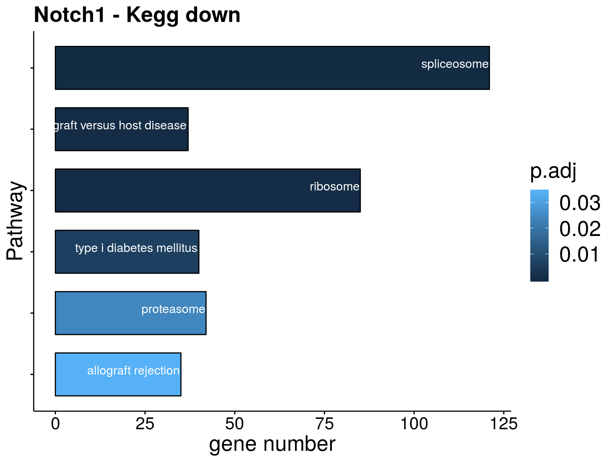

Notch1
aluetge
2019-06-27
Last updated: 2019-11-17
Checks: 7 0
Knit directory: transcriptome_cll/
This reproducible R Markdown analysis was created with workflowr (version 1.4.0). The Checks tab describes the reproducibility checks that were applied when the results were created. The Past versions tab lists the development history.
Great! Since the R Markdown file has been committed to the Git repository, you know the exact version of the code that produced these results.
Great job! The global environment was empty. Objects defined in the global environment can affect the analysis in your R Markdown file in unknown ways. For reproduciblity it’s best to always run the code in an empty environment.
The command set.seed(20190511) was run prior to running the code in the R Markdown file. Setting a seed ensures that any results that rely on randomness, e.g. subsampling or permutations, are reproducible.
Great job! Recording the operating system, R version, and package versions is critical for reproducibility.
Nice! There were no cached chunks for this analysis, so you can be confident that you successfully produced the results during this run.
Great job! Using relative paths to the files within your workflowr project makes it easier to run your code on other machines.
Great! You are using Git for version control. Tracking code development and connecting the code version to the results is critical for reproducibility. The version displayed above was the version of the Git repository at the time these results were generated.
Note that you need to be careful to ensure that all relevant files for the analysis have been committed to Git prior to generating the results (you can use wflow_publish or wflow_git_commit). workflowr only checks the R Markdown file, but you know if there are other scripts or data files that it depends on. Below is the status of the Git repository when the results were generated:
Ignored files:
Ignored: .Rhistory
Ignored: .Rproj.user/
Untracked files:
Untracked: data/2018-03-05_IGHV.RData
Untracked: data/patmeta_170324.RData
Untracked: output/IGHV1_69.svg
Untracked: output/cluster1000exprgenes.pdf
Untracked: output/cluster500exprgenes.pdf
Untracked: output/desRes_15112019.RData
Untracked: output/figures/hist_mutations.svg
Untracked: output/figures/overview_mutations.pdf
Untracked: output/figures/r_objects/
Untracked: output/figures/sum_diffGenes_0.05_2.pdf
Untracked: output/figures/sum_diffGenes_noTsig.pdf
Untracked: output/figures/sum_diffGenes_noTsig_IGHVTri12.pdf
Unstaged changes:
Modified: analysis/ATM.Rmd
Modified: analysis/BRAF.Rmd
Modified: analysis/Del8p12.Rmd
Modified: analysis/Gain8q24.Rmd
Modified: analysis/IGHV.Rmd
Modified: analysis/Med12.Rmd
Modified: analysis/SF3B1.Rmd
Modified: analysis/epistasis.Rmd
Modified: analysis/index.Rmd
Modified: analysis/methylation_IP_vs_all.Rmd
Modified: analysis/summary_de_genes.Rmd
Modified: analysis/summary_variants.Rmd
Modified: output/diff_genes/ATM_diffGenes.csv
Modified: output/diff_genes/BRAF_diffGenes.csv
Modified: output/diff_genes/MED12_diffGenes.csv
Modified: output/diff_genes/NOTCH1_diffGenes.csv
Modified: output/diff_genes/SF3B1_diffGenes.csv
Modified: output/diff_genes/TP53_diffGenes.csv
Modified: output/diff_genes/del11q22.3_diffGenes.csv
Modified: output/diff_genes/del13q14_diffGenes.csv
Modified: output/diff_genes/del17p13_diffGenes.csv
Modified: output/diff_genes/del8p12_diffGenes.csv
Modified: output/diff_genes/gain8q24_diffGenes.csv
Modified: output/diff_genes/trisomy12_diffGenes.csv
Modified: output/figures/pca_Meth_top150.svg
Note that any generated files, e.g. HTML, png, CSS, etc., are not included in this status report because it is ok for generated content to have uncommitted changes.
These are the previous versions of the R Markdown and HTML files. If you’ve configured a remote Git repository (see ?wflow_git_remote), click on the hyperlinks in the table below to view them.
| File | Version | Author | Date | Message |
|---|---|---|---|---|
| Rmd | d78aa2c | aluetge | 2019-11-17 | wflow_publish(“analysis/Notch1.Rmd”) |
| html | e6f3dd0 | aluetge | 2019-11-13 | Build site. |
| Rmd | 109e2cf | aluetge | 2019-11-13 | wflow_publish(c(“analysis/Notch1.Rmd”, “analysis/SF3B1.Rmd”, “analysis/TP53.Rmd”)) |
| html | cc24f92 | aluetge | 2019-07-28 | Build site. |
| Rmd | b20d1a9 | aluetge | 2019-06-27 | add variants |
Notch1 signature
Differentially expressed genes
1. Differential expression analysis
load packages
library(DESeq2)
library(tidyverse)
library(ggsci)
library(matrixStats)
library(piano)
library(reshape2)
library(genefilter)
library(Biobase)
library(ComplexHeatmap)
library(ggplot2)
library(gtable)
library(grid)
library(circlize)
library(gridExtra)
library(ggpubr)
library(RColorBrewer)
library(here)load data
data_dir <- here("data")
output_dir <- here("output")
figure_dir <- here("output/figures")
#dds data set. gene expression data + patmetadata
load(paste0(data_dir, "/ddsrnaCLL_150218.RData"))
variant <- "NOTCH1"
#filter for patients without NA in variant
ddsCLL <- ddsCLL[, !is.na(colData(ddsCLL)[,variant])]
#differentially expressed genes between notch1 groups (see differential expression.html)
diff_all <- read.csv(file=paste0(output_dir, "/diff_genes/", variant, "_diffGenes.csv"))
rownames(diff_all) <- diff_all$X
diff_all <- diff_all[which(diff_all$padj < 0.01 ),-1]
diff <- diff_all[which(abs(diff_all$stat) > 4.5) ,]
mutStatus <- data.frame(colData(ddsCLL)) %>% arrange(NOTCH1)
colnames(ddsCLL) <-colData(ddsCLL)$PatID
ddsCLL <- ddsCLL[, mutStatus$PatID]
#expression data
ddsCLL <- estimateSizeFactors(ddsCLL)
RNAnorm <- varianceStabilizingTransformation(ddsCLL, blind = T)Expression matrix
#filter for sign. genes in variant
exprMat <- assay(RNAnorm)
exprVariant <- exprMat[rownames(diff),]
colnames(exprVariant) <- colData(ddsCLL)$PatID
exprVariant.new <- log2(exprVariant)
exprVariant.new <- t(scale(t(exprVariant.new)))
exprVariant.new[exprVariant.new > 4] <- 4
exprVariant.new[exprVariant.new < -4] <- -4
rownames(exprVariant.new) <- rowData(RNAnorm[rownames(diff),])$symbolExpression signature
#colors
colors = colorRamp2(c(-4,-2,0,2,4), c("#2166ac","#4393c3", "#f7f7f7", "#d6604d","#b2182b"))
annocol <- get_palette("jco", 10)
annocolor <- list(NOTCH1 = c("1" = annocol[8], "0" = annocol[9]))
rowcolors <-colorRampPalette(brewer.pal(5, "Set1"))(5)
rowcolors[6] <- "white"
feature <- as.data.frame(colData(ddsCLL)[,c(variant)])
colnames(feature) <- c(variant)
rownames(feature) <- colnames(RNAnorm)
ha_col <- HeatmapAnnotation(df = feature, col = annocolor, annotation_height = unit(c(rep(1.9, 1)), "cm"), annotation_legend_param = list(title_gp = gpar(fontsize = 50), labels_gp = gpar(fontsize = 45), grid_height = unit(1.9, "cm"), grid_width = unit(1.9, "cm")))
h1 <- Heatmap(exprVariant.new ,
km = 2,
gap = unit(0.5, "cm"),
cluster_columns = F,
clustering_distance_rows = "pearson",
clustering_method_rows = "ward.D2",
column_title = paste0("Gene signature: ", variant),
col = colors,
column_title_gp = gpar(fontsize = 60, fontface = "bold"),
heatmap_legend_param = list(title = "expr",
title_gp = gpar(fontsize = 50),
grid_height = unit(1.9, "cm"),
grid_width = unit(1.9, "cm"),
gap = unit(2, "cm"),
labels_gp = gpar(fontsize = 45)),
column_dend_height = unit(2.5, "cm"),
show_row_dend = FALSE,
show_column_names = FALSE ,
show_row_names = TRUE,
row_names_gp = gpar(fontsize = 20),
top_annotation = ha_col)
#svg(filename=paste0(figure_dir, "/", variant, "_gene_expr.svg"), width=30, height=45)
#pdf(file=paste0(figure_dir, "/", variant, "_gene_expr.pdf"), width=22, height=25)
draw(h1 ) 
#dev.off()
saveRDS(h1, file = paste0(output_dir, "/figures/r_objects/Notch1/notch1_heatmap.rds"))Sample and gene specific expression - top genes
#function to create stripchart plots for specific genes
gene_count <- function(gene_nam){
geneEnsID <- rownames(ddsCLL)[which(rowData(ddsCLL)$symbol %in% gene_nam)]
geneNum <- counts(ddsCLL)[geneEnsID,]
mutPat <- as.data.frame(colData(ddsCLL)[, c(variant)])
colnames(mutPat) <- c("genotype")
geneDat <- cbind(mutPat, geneNum)
colnames(geneDat) <- c("genotype", "counts")
p <- ggstripchart(geneDat, x = "genotype", y = "counts",
color = "genotype",
palette = "jco",
add = "mean_sd",
title = paste(gene_nam),
font.x = 18, font.y = 18, font.legend = 16,
ylab = "normalized counts") + font("xy.text", size = 15) + font("title", size = 20, face = "bold")
saveRDS(p, file = paste0(output_dir, "/figures/r_objects/Notch1/de_genes/", gene_nam, ".rds"))
#ggsave(file=paste0(figure_dir, "/tri12/genetic_interaction_", gene_nam, ".svg"), plot=p, width=6, height=5)
p
}
diff <- diff_all[which(diff_all$stat > 4),]
geneList <- as.character(diff$Symbol)
geneList <- geneList[-which(geneList %in% "")]
lapply(geneList, gene_count)[[1]]
| Version | Author | Date |
|---|---|---|
| cc24f92 | aluetge | 2019-07-28 |
[[2]]
| Version | Author | Date |
|---|---|---|
| cc24f92 | aluetge | 2019-07-28 |
[[3]]
| Version | Author | Date |
|---|---|---|
| cc24f92 | aluetge | 2019-07-28 |
[[4]]
| Version | Author | Date |
|---|---|---|
| cc24f92 | aluetge | 2019-07-28 |
[[5]]
| Version | Author | Date |
|---|---|---|
| cc24f92 | aluetge | 2019-07-28 |
[[6]]
| Version | Author | Date |
|---|---|---|
| cc24f92 | aluetge | 2019-07-28 |
[[7]]
| Version | Author | Date |
|---|---|---|
| cc24f92 | aluetge | 2019-07-28 |
[[8]]
| Version | Author | Date |
|---|---|---|
| cc24f92 | aluetge | 2019-07-28 |
[[9]]
| Version | Author | Date |
|---|---|---|
| cc24f92 | aluetge | 2019-07-28 |
[[10]]
| Version | Author | Date |
|---|---|---|
| cc24f92 | aluetge | 2019-07-28 |
[[11]]
| Version | Author | Date |
|---|---|---|
| cc24f92 | aluetge | 2019-07-28 |
Gene set enrichment analysis
Gene sets
#load gene set collection
#Hallmark
gsc <- loadGSC("/home/almut/Dokumente/masterarbeit/data/h.all.v6.0.symbols.gmt", type="gmt")
#Kegg
gsc_Kegg <- loadGSC("/home/almut/Dokumente/masterarbeit/data/c2.cp.kegg.v6.0.symbols.gmt", type="gmt")Run piano
gmtFile <- gsc_Kegg
diff_res <- diff_all
diff_res$chromosome <- rowData(RNAnorm)[rownames(diff_res),]$chromosome
diff_res <- diff_res[-which(diff_res$Symbol %in% c("", NA)),]
geneNam <- diff_res$Symbol
pVal <- diff_res$padj
logFold <- diff_res$log2FoldChange
stat <- diff_res$stat
gsTab <- data.frame(gene = geneNam, stat = stat, logFold = logFold)
gsaTab <- data.frame(row.names = gsTab$gene, stat = gsTab$stat)
res <- runGSA(geneLevelStats = gsaTab,
geneSetStat = "gsea",
adjMethod = "fdr", gsc=gmtFile,
signifMethod = "geneSampling",
nPerm = 50000,
gsSizeLim=c(1, Inf))Running gene set analysis:Checking arguments...done!*** Please note that running the GSEA-method may take a substantial amount of time! ***Final gene/gene-set association: 12 genes and 25 gene sets Details: Calculating gene set statistics from 12 out of 43 gene-level statistics Using all 43 gene-level statistics for significance estimation Removed 5254 genes from GSC due to lack of matching gene statistics Removed 161 gene sets containing no genes after gene removal Removed additionally 0 gene sets not matching the size limits Loaded additional information for 25 gene setsCalculating gene set statistics...done!
Calculating gene set significance...done!
Adjusting for multiple testing...done!Res_up <- arrange(GSAsummaryTable(res), `p adj (dist.dir.up)`)
Res_dn <- arrange(GSAsummaryTable(res), `p adj (dist.dir.dn)`)
#Plot
resPlot <- Res_up[, c(1:3,5,8,9)]
resPlot_dn <- Res_dn[, c(1:3,7,8,9)]
colnames(resPlot) <- c("pathway", "gene_number", "stat", "p.adj","genes_up" , "genes_dn")
colnames(resPlot_dn) <- c("pathway", "gene_number", "stat", "p.adj","genes_up" , "genes_dn")
enrichPlot <- resPlot_dn[c(1:5),] %>% mutate(log10Padj = -log10(p.adj))
#plot
p <- ggbarplot(enrichPlot, x = "pathway", y = "log10Padj",
fill = "gene_number",
color = "white",
palette = "gsea",
sort.val = "asc",
sort.by.groups = FALSE,
ylab = "-log10(padj)",
legend.title = "#diff.genes",
rotate = TRUE,
font.x = 20, font.y = 20, font.legend = 20, legend = "right",
title = "Notch1 - Kegg",
ggtheme = theme_pubr()) +
font("xy.text", size = 16) +
font("title", size = 20, face = "bold")
#ggsave(file=paste0(figure_dir,"/GSEA_", variant, "_Kegg.svg"), plot=p, width=14, height=7)
p
| Version | Author | Date |
|---|---|---|
| cc24f92 | aluetge | 2019-07-28 |
saveRDS(p, file = paste0(output_dir, "/figures/r_objects/Notch1/notch1_enrichment.rds"))
sessionInfo()R version 3.6.0 (2019-04-26)
Platform: x86_64-pc-linux-gnu (64-bit)
Running under: Ubuntu 16.04.6 LTS
Matrix products: default
BLAS: /usr/lib/libblas/libblas.so.3.6.0
LAPACK: /usr/lib/lapack/liblapack.so.3.6.0
locale:
[1] LC_CTYPE=de_DE.UTF-8 LC_NUMERIC=C
[3] LC_TIME=de_DE.UTF-8 LC_COLLATE=de_DE.UTF-8
[5] LC_MONETARY=de_DE.UTF-8 LC_MESSAGES=de_DE.UTF-8
[7] LC_PAPER=de_DE.UTF-8 LC_NAME=C
[9] LC_ADDRESS=C LC_TELEPHONE=C
[11] LC_MEASUREMENT=de_DE.UTF-8 LC_IDENTIFICATION=C
attached base packages:
[1] grid parallel stats4 stats graphics grDevices utils
[8] datasets methods base
other attached packages:
[1] here_0.1 RColorBrewer_1.1-2
[3] ggpubr_0.2 magrittr_1.5
[5] gridExtra_2.3 circlize_0.4.6
[7] gtable_0.3.0 ComplexHeatmap_2.0.0
[9] genefilter_1.66.0 reshape2_1.4.3
[11] piano_2.0.2 ggsci_2.9
[13] forcats_0.4.0 stringr_1.4.0
[15] dplyr_0.8.1 purrr_0.3.2
[17] readr_1.3.1 tidyr_0.8.3
[19] tibble_2.1.3 ggplot2_3.1.1
[21] tidyverse_1.2.1 DESeq2_1.24.0
[23] SummarizedExperiment_1.14.0 DelayedArray_0.10.0
[25] BiocParallel_1.18.0 matrixStats_0.54.0
[27] Biobase_2.44.0 GenomicRanges_1.36.0
[29] GenomeInfoDb_1.20.0 IRanges_2.18.1
[31] S4Vectors_0.22.0 BiocGenerics_0.30.0
loaded via a namespace (and not attached):
[1] readxl_1.3.1 backports_1.1.4 Hmisc_4.2-0
[4] fastmatch_1.1-0 workflowr_1.4.0 plyr_1.8.4
[7] igraph_1.2.4.1 lazyeval_0.2.2 shinydashboard_0.7.1
[10] splines_3.6.0 digest_0.6.19 htmltools_0.3.6
[13] gdata_2.18.0 checkmate_1.9.3 memoise_1.1.0
[16] cluster_2.1.0 limma_3.40.2 annotate_1.62.0
[19] modelr_0.1.4 colorspace_1.4-1 blob_1.1.1
[22] rvest_0.3.4 haven_2.1.0 xfun_0.7
[25] crayon_1.3.4 RCurl_1.95-4.12 jsonlite_1.6
[28] survival_2.44-1.1 glue_1.3.1 zlibbioc_1.30.0
[31] XVector_0.24.0 GetoptLong_0.1.7 shape_1.4.4
[34] scales_1.0.0 DBI_1.0.0 relations_0.6-8
[37] Rcpp_1.0.1 xtable_1.8-4 htmlTable_1.13.1
[40] clue_0.3-57 foreign_0.8-71 bit_1.1-14
[43] Formula_1.2-3 DT_0.7 htmlwidgets_1.3
[46] httr_1.4.0 fgsea_1.10.0 gplots_3.0.1.1
[49] acepack_1.4.1 pkgconfig_2.0.2 XML_3.98-1.20
[52] nnet_7.3-12 locfit_1.5-9.1 labeling_0.3
[55] tidyselect_0.2.5 rlang_0.3.4 later_0.8.0
[58] AnnotationDbi_1.46.0 munsell_0.5.0 cellranger_1.1.0
[61] tools_3.6.0 visNetwork_2.0.7 cli_1.1.0
[64] generics_0.0.2 RSQLite_2.1.1 broom_0.5.2
[67] evaluate_0.14 yaml_2.2.0 knitr_1.23
[70] bit64_0.9-7 fs_1.3.1 caTools_1.17.1.2
[73] nlme_3.1-140 whisker_0.3-2 mime_0.7
[76] slam_0.1-45 xml2_1.2.0 compiler_3.6.0
[79] rstudioapi_0.10 png_0.1-7 marray_1.62.0
[82] geneplotter_1.62.0 stringi_1.4.3 lattice_0.20-38
[85] Matrix_1.2-17 shinyjs_1.0 pillar_1.4.1
[88] GlobalOptions_0.1.0 data.table_1.12.2 bitops_1.0-6
[91] httpuv_1.5.1 R6_2.4.0 latticeExtra_0.6-28
[94] promises_1.0.1 KernSmooth_2.23-15 gtools_3.8.1
[97] assertthat_0.2.1 rprojroot_1.3-2 rjson_0.2.20
[100] withr_2.1.2 GenomeInfoDbData_1.2.1 hms_0.4.2
[103] rpart_4.1-15 rmarkdown_1.13 git2r_0.25.2
[106] sets_1.0-18 shiny_1.3.2 lubridate_1.7.4
[109] base64enc_0.1-3